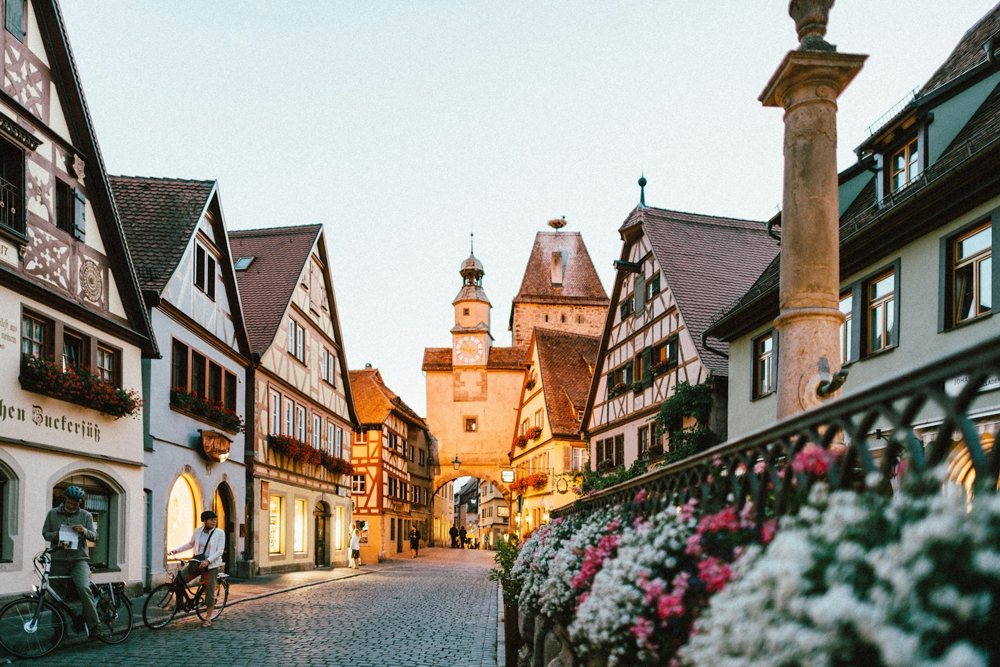

Im Dorf innerhalb der Stadt Wetzikon.
Als Drehscheibe in unserem Stadtteil wirkt der Quartierverein Robenhausen – parteipolitisch und konfessionell unabhängig, seit dem 3. September 1976.
Was uns bewegt
Wir pflegen Kontakte mit Stadtbehörden, Vereinen, Organisationen und Privaten – damit die Interessen von Robenhausen gewahrt bleiben.
Gesellschaftlicher Austausch im Quartier ist unser Kern. In dieser Eigenschaft organisieren wir den Wochenmarkt auf dem Rössliplatz (März bis November) mit unterschiedlichen Marktfahrern sowie weitere Themenmärkte im Jahresprogramm.
Für Mitglieder bietet der QV Robenhausen gesellige Anlässe an, die stets gern besucht werden.
Ziel seit 1976: ein lebendiger Quartier- und Gemeinschaftsgeist sowie die Wahrung der Interessen gegenüber Behörden und Privaten. Das erreichen wir durch Anregung kultureller, gesellschaftlicher und gemeinnütziger Aktivitäten, Veranstaltungen zum Kennenlernen und den Aufbau von Quartiertraditionen – allen voran den Robehuuser Wuchemärt.

Vorstand 2026
Präsidium
Aktuarin
Kassierin
Marktverantwortliche
Marktfahrer & Märthelfer
Suurchruute
Ansprechpersonen
Bea Hartmeier
Nikolina Schrödel
Manuela Schmid
Wuchemärt & Themenmärkte
Patrick Rüegg
Lorenz Raymann & Christian Studer
Revisoren: Walter Hauser, Eva Schäppi · Ersatzrevisor: Peter Siegenthaler
Geschichte des Vereins
03.09.1976Gründung des Quartiervereins
04.06.1977Erster Robehuuser Wuchemärt
1999Marktkommission wird Ressort im QV
Seit 1977 existierte eine eigenständige Marktkommission. 1999 wurde sie aufgelöst und als Ressort in den Quartierverein Robenhausen übernommen. Der erste Robehuuser Wuchemärt fand am 4. Juni 1977 statt.
| Jahr | Präsident/in | Aktuar/in | Kassier/in |
|---|---|---|---|
| 1976 | René Scheidegger | Werner Heubi | Silvia Kast |
| 1977 | René Scheidegger | Werner Heubi | Silvia Kast |
| 1978 | Werner Camenisch | Werner Heubi | Silvia Kast |
| 1979 | Werner Camenisch | Werner Heubi | Silvia Kast |
| 1980–1981 | René Scheidegger (Vize) | Werner Heubi | Silvia Kast |
| 1982–1983 | Henri Wolfensberger | Werner Heubi | Katharina Diener |
| 1984–1985 | Henri Wolfensberger | Marcel Roten | Katharina Diener / Georg Matter |
| 1986–1988 | Hanspeter Bosshard | Marcel Roten | Georg Matter |
| 1989–1991 | Hanspeter Bosshard / Gebi Breitenmoser (Vize) | Peter Siegenthaler | Georg Matter |
| 1992 | Gebi Breitenmoser | Wilma Sigel | Peter Siegenthaler |
| 1993–1997 | Gebi Breitenmoser | Annamarie Bocchetti | Peter Siegenthaler |
| 1998–2000 | Peter Siegenthaler | Annamarie Bocchetti | Andreas Roten |
| 2001 | Peter Siegenthaler | Walter Hauser | Erika Berger |
| 2002–2004 | Peter Siegenthaler | Walter Hauser | Willy Friederich |
| 2005–2010 | Peter Siegenthaler | Walter Hauser | Peter Leu |
| 2011 | Peter Siegenthaler | Sandy Meier | Peter Leu |
| 2012–2017 | Peter Siegenthaler | Sandy Meier | Philippe Caviezel |
| 2018 | Philippe Caviezel | Peter Fuchs | Laura Frankland |
| 2019 | Philippe Caviezel | Martin Müllhaupt | Patricia Fischer |
| 2020–2021 | Philippe Caviezel | Eva Schäppi | Patricia Fischer |
| 2022 | Philippe Caviezel | Joe Schwyter | Patricia Fischer |
| 2023–2024 | Philippe Caviezel | Joe Schwyter | Paulina Isler |
| 2025 | Philippe Caviezel | Claudia Götz | Claudia Götz |
| 2026 | Lukas Küng | Bea Hartmeier | Nikolina Schrödel |
Nachbarschaft
Robenhauser Vereine
Aabachgruppe Robenhausen
Badi am Aabach, Aabachfest · gegründet 14.12.1989
FAGERO
Fasnachtgesellschaft Robehuuse · gegründet 14.12.1970
Guggemusig Robehuuse
Robehuuser Fasnacht · gegründet 1977
Theater Robehuuse
Laientheater · gegründet 11.11.2010
Viva Robenhausen
Leben im Alter im alten Robenhausen · gegründet 10.05.2022
wi!ber@robehuuse
Kindermaskenball Robenhausen
FüRo / Road Runner
Robehuuser Fasnacht · Motorradclub Robenhausen
Der «älteste Robehüüsler» ist ca. 7000 Jahre alt und trägt einen Schnauz: ein bearbeiteter Stein vor dem Hirzel-Unternehmen an der Motorenstrasse, dessen Gesicht bei Sonnenschein nach 14.00 Uhr im Schattenwurf erscheint. Von Susanne von Ballmoos. Weitere Chronik: Wetzipedia.
Strassenverzeichnis
Gemäss Stadt Wetzikon 2023
Bertschikerstrasse (Zürcherstrasse bis Bahnlinie)
Bogenweg
Buchgrindelstrasse
Dorfstrasse
Eichhölzliweg
Felseneggstrasse
Florastrasse
Giessereistrasse
Grundstrasse
Haldenstrasse
Hedi-Lang-Strasse
Heidweg
Im Heidacher
Im Sandbüel
Im Zil
Juheestrasse / Juheeweg
Konsumstrasse
Mittelweg
Motorenstrasse (Rössliplatz bis Weststrasse)
Nordstrasse
Sandbühlstrasse / Sandweg
Schönaustrasse
Schulhausstrasse
Seegräbnerstrasse
Stegenstrasse
Tändelistrasse
Tobelackerstrasse
Usterstrasse (Nr. 44 bis Flos)
Weststrasse (Zürcherstrasse bis Hedi-Lang-Strasse, inkl. Nrn. 48–52)
Wydumweg + Wydumstrasse
Widmenwiesstrasse
Zelglistrasse
Zürcherstrasse (Nr. 35 bis Grenze Aathal-Seegräben)